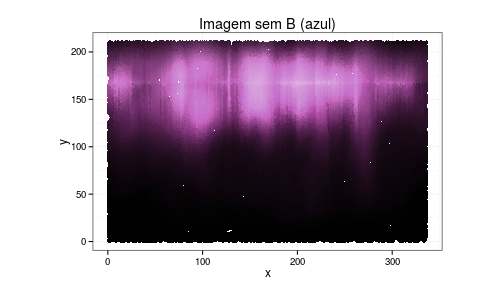

-
Aula 09 - Laboratório III
2015-02-06
SourcePacotes necessários para o Lab. III
library(ggplot2) library(magrittr) library(tidyr) library(dplyr) library(jpeg) library(tree)Laboratório III - Recuperação de imagem
Neste laboratório iremos comparar visualmente o desempenho de modelos de regressão linear e de árvores de decisão em duas diferentes situações.
Para isso, iremos mexer com imagens .jpg.
Imagens .jpg
Antes de iniciarmos a brincadeira, vale uma breve introdução às imagens .jpg, pois elas formarão os
data.frame's do laboratório.Arquivos com extenção .jpg guardam 5 coordenadas que são suficientes para serem entendidas e desenhadas pelo computador:
xeysão as coordenadas cartesianas da imagem; er,gebred, green e blue, respectivamente, que juntas formam cores.
Todas as cores que conhecemos podem ser compostas pela combinação dessas três cores. A intensidade de cada cor varia de 0 a 1.
Para cada ponto no plano (x,y) existe uma cor associada. Assim, uma imagem pode ser representada por um banco de dados com 5 colunas:
x,y,r,geb.Objetivo
Verificar qual modelo entre regressão linear e árvores de decisão é o mais adequado para recuperar a o componente azul da imagem purple_wave.jpg.
Verificar qual modelo entre regressão linear e árvores de decisão é o mais adequado para recuperar a o componente azul da imagem xadrez_colorido.jpg.
Preparação do Banco de dados
- Para construir nossos bancos de dados, carregue as duas imagens abaixo (clique para download e salve na pasta do seu projeto):
- Com auxílio da função
readJPEG()do pacotejpeg, carregue uma das imagens no R e transforme paradata.frame(primeiro a purple_wave.jpg).
# a) carrega uma imagem jpeg no R img <- readJPEG("assets/fig/purple_wave.jpg") # b) transforma o array da imagem em data.frame com infos de posicao (x,y) e cor (r,g,b) # dimensões da imagem img_dim <- dim(img) # RGB para data.frame img_df <- data.frame( x = rep(1:img_dim[2], each = img_dim[1]), y = rep(img_dim[1]:1, img_dim[2]), r = as.vector(img[,,1]), g = as.vector(img[,,2]), b = as.vector(img[,,3]) ) %>% mutate(cor = rgb(r, g, b), id = 1:n())- Divida o data.frame em duas partes: uma com o azul (coluna
b) e outra sem.
- Parte 1)
x,y,r,g - Parte 2)
x,y,r,g,b
# para reprodução set.seed(1) # Parte 1) x, y, r, g img_df_parte1 <- img_df %>% sample_frac(3/5) %>% # separando 3/5 do banco mutate(b_backup = b, # backup do azul original b = 0, # retirando o azul da imagem cor = rgb(r, g, b)) # cor da imagem sem o azul # Parte 2) x, y, r, g, b img_df_parte2 <- img_df %>% filter(!id%in%img_df_parte1$id) # filtra as linhas que estão na Parte 1- Visualize.
Veja como fica a imagem original sem o azul e como é o azul original isolado.
# imagem sem o azul ggplot(data = img_df_parte1, aes(x = x, y = y)) + geom_point(colour = img_df_parte1$cor) + labs(x = "x", y = "y", title = "Imagem sem B (azul)") + coord_fixed(ratio = 1) + theme_bw()
# apenas o azul da imagem ggplot(data = img_df_parte2, aes(x = x, y = y)) + geom_point(colour = img_df_parte2$cor) + labs(x = "x", y = "y", title = "Imagem sem B (azul)") + coord_fixed(ratio = 1) + theme_bw()
A sua tarefa é recuperar o azul (
b) da Parte 1 que apagamos utilizando modelos preditivos construídos com a Parte 2 (que ainda tem o azul!). Vamos aos exercícios.Exercícios
Exercício 1: Descritiva
Construa para
x,y,r,g,b:- A matriz de correlação linar e arredonde os resultados para duas casas decimais (utilize a função
cor()); - A matriz de gráficos de dispersão (use a função
pairs()).
{kind=link}
{kind=link}